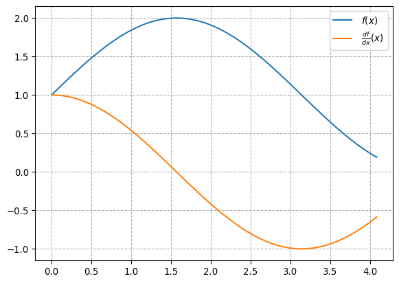

I have written about differential form before (What are „differential forms), but there I have never adressed the elephant in the room, of why, we should consider \(df\) as a covector field. Neither have I given any explanation about what \(dx\) could mean. Even less so, what \(\frac{df}{dx}\) could be.
In this plot, we can see the typical representation of how one can calculate the derivative of a function \(f\) using rise over run. By taking the limit as \(dx\) approaches \(0\), we get the traditional derivative \[ \frac{df}{dx}\Bigg{|}_{ x_0 } := \lim_{h\to 0} \frac{f(x_0 + h)- f(x_0)}{h} \tag{1}\]
Implicitly we have evaluated our derivative at the position \(x_0\). By varying this \(x_0\), we get the derivative as it is often practically used, and it may also be written \(\frac{df}{dx}(x)\).

But how does this relate do \(dx\) being some covector field? As a reminder, a covectorfield is just a mapping from points in an underlying topological space to covectors – also known as linear functions or forms (remembder that bilinear forms are just linear functions in two arguments, so the name form does not seem too out of place here).
Well, lets take a step back and analyze Equation 1 again. If we take a Table 1, we can see that the \(df|_{x_0}\) here corresponds to a small nudge in the \(f\) direction starting at \(x_0\), which is \(f(x_0 + h) - f(x_0)\) in the limit above.
How does this relate to \(dx\)? Here the first misunderstanding might occure. After all \(x\) is a real number, not a function like \(f\), so how can \(d\) take both real numbers and functions as a parameter? The solution here is, that standard notation overloads the term “\(x\)”. The \(x\) in the defintion \(f(x) = \text{sin}(x)+1\) is a parameter of \(f\) and therefor in a different scope then the \(x\) which is used in \(dx\). The \(x\) in \(dx\) actually stands for a particular family of projections:
\[ \begin{align*} x &: \mathbb{R} \to \mathbb{R} & x(v_1) = v_1 \\ &: \mathbb{R}^2 \to \mathbb{R} & x\begin{pmatrix} v_1 \\ v_2 \end{pmatrix} = v_1 \\ &: \mathbb{R}^3 \to \mathbb{R} & x\begin{pmatrix} v_1 \\ v_2 \\ v_3 \end{pmatrix} = v_1 \\ & \vdots \\ &: \mathbb{R}^d \to \mathbb{R} & x\begin{pmatrix} v_1 \\ \vdots \\ v_d \end{pmatrix} = v_1 \\ \end{align*} \]
where we may pick the apropriate one depending on the current context. If we would like to be pedantic though, we could also fomalize the signature of \(x\) as follows
\[ x : \bigsqcup_{i=1, dots} \mathbb{R}^i \to \mathbb{R}, \quad (v_i)_{i=1, \dots, d} \mapsto v_1 \]
By doing this, we get some consistency between \(df|x_0\) which corresponds to \[\lim_{h\to 0} f(x_0 + h) - f(x_0)\] and \(dx|x_0\), which corresponds to \[\lim_{h\to 0} x(x_0 + h) - x(x_0) = \lim_{h\to 0} x_0 + h - x_0 = \lim_{h\to 0} h\]
Now we run into quite the conundrum though. If we were to simply define \(df|_{x_0} = \lim_{h\to 0} f(x_0 + h) - f(x_0)\), we would run into the problem, that we calculate our limits too eagerly. We would then get \[\frac{df|_{x_0}}{dx|_{x_0}} = \frac{\lim_{h\to 0} f(x_0 + h) - f(x_0)} {\lim_{h\to 0} h} = \frac{0}{0}\] where the denominator would be zero, making the result undefined. To solve this problem, we wish to “defer” the evaluation of our limits until the end. We wish to “extract” the limits from any of the algebraic manipulations we wish to apply to \(df\) and \(dx\) until we are ready to do so. This leads us to our first definition of the differential \(d\)
\[ \begin{align*} d &: \underbrace{C^0(\mathbb{R})}_{f} \to \underbrace{\mathbb{R}}_{x_0} \to (\underbrace{\mathbb{R}}_{h} \to \mathbb{R}) \\ df|_{x_0} &= h \mapsto f(x_0 + h) - f(x_0) \end{align*} \]
We use the notation of currying here for simplicity. Now we can postpone any limits until the end: \[ \frac{df}{dx}\Bigg|_{x_0} = h \mapsto \frac{f(x_0 + h) - f(x_0)}{x(x_0+h) - x(x_0)} \\ \] And we may use coercion to simplify our notation, so that \(\frac{df}{dx}\bigg|_{x_0}\) and \(\lim_{h \downarrow 0}\frac{df}{dx}\bigg|_{x_0}(h)\) may be used interchangeably (the notation for that would be \(\uparrow\frac{df}{dx}\bigg|_{x_0} = \lim_{h \downarrow 0}\frac{df}{dx}\bigg|_{x_0}(h)\)). Normally we would also require that \(\lim_{h \downarrow 0}\frac{df}{dx}\bigg|_{x_0}(h) = -\lim_{h \uparrow 0}\frac{df}{dx}\bigg|_{x_0}(h)\) This means, that for any formula, the limit may only be taken as a “post processing” effect on it.
Because both \(f\) and \(x\) (or any differentiable function \(g\)) must be differentiable at each point \(x_0\), which means that the limit above must exist there, we can in fact regard \(dg\) as a covector field:
\[ \begin{align*} dg &: \mathbb{R} \to \mathbb{R}^* \\ x_0 &\mapsto \left(\lambda \mapsto \lambda \cdot \underbrace{\left(\lim_{h \to 0} g(x_0 + h) - g(x_0)\right)}_{\text{scalar, because of } g \in C^0(\mathbb{R})}\right) \end{align*} \]
After this, we can now generalize \(d\) to the exterior derivative real manifolds \(\Omega\), by considering \(\bigwedge^0 \Omega\) as \(\Omega\) and extendint the above definiton to work on \(\Omega\) as well and not just \(\mathbb{R}\).
Additionally, this might give some insights into what \[ \int_a^b f(x) dx \] could mean. Due to the Riemann integral, we like to think about summming up increasingly small rectangles of height \(f(x)\) and width \(dx\). Here we again take the approach of wrapping the sum in a lazily evaluated formula to which we apply this limit post-processing which we get from \(dx\) for free.
How does this relate to the definition of a differential like this: \[ d f_x : T_x M \to T_{f(x)} N \] if \(f : M \to N\) is a \(C^0\) map between real manifolds? This turns out to be a more somewhat more general way of defining differentials, which overlaps with our definition if \(M\) and \(N\) are \(\mathbb{R}\). Here the parameters \(f \in C^0\) and \(x \in M\) are already given, which explains why the following red terms are missing
\[ \begin{align*} d &: \textcolor{red}{\underbrace{C^0(\mathbb{R})}_{f} \to \underbrace{\mathbb{R}}_{x_0} \to} (\underbrace{\textcolor{green}{\mathbb{R}}}_{h} \to \textcolor{blue}{\mathbb{R}}) \\ df|_{x_0} &= h \mapsto f(x_0 + h) - f(x_0) \end{align*} \]
We can also identify that the \(\mathbb{R}\) which inhabits \(h\) actually is \(\textcolor{green}{T_{x_0} \mathbb{R} \cong \mathbb{R}}\), because the purpose of \(h\) was to model a tiny nudge away from \(x_0\), i.e. a point living on the tangent space of \(\mathbb{R}\) at \(x_0\). Lastly, it is easy to see that the last \(\mathbb{R}\) in our signature actually just corresponds to the tangent space of \(f(x_0)\), which we can easily see by comparing \(f(x_0 + h) - f(x_0)\) to the definition of the tangent space of \(f(x_0)\) and so we get \(\textcolor{blue}{T_{f(x_0)} \mathbb{R} \cong \mathbb{R}}\).
By fixing \(f\), we get \[df : \textcolor{red}{R} \to \underbrace{\textcolor{green}{\mathbb{R}} \to \textcolor{blue}{\mathbb{R}}}_{\mathbb{R}^*}\] which is just a covectorfield, otherwise known as a differential 1-form. Generalizing this, we would get \[d : \textcolor{purple}{(f : M \to N)} \to \textcolor{red}{(x : M)} \to \textcolor{green}{T_\textcolor{red}{x}M} \to \textcolor{blue}{T_{\textcolor{purple}{f(\textcolor{red}{x})}}N}\] We have identified \(T_x M\) with \(\mathbb{R}\) here, while in fact \(T_x M\) consists of all smooth maps \(s: [-1,1] \to M\) such that \(s(0) = x\) under the equivalence relation \(s \sim r \Leftrightarrow \frac{\partial s}{\partial t}|_{t=0} = \frac{\partial r}{\partial t}|_{t=0}\). We are in fact allowed to use these derivatives \(\frac{\partial r}{\partial t}|_{t=0}\) here, because we have already defined them for maps \(\mathbb{R}\to\mathbb{R}\) above. So formally, we get: \[ T_x M = \frac{\{s : [-1, 1] \to M \mid s(0)=x \}}{\sim} \] How does this relate to the intrinsic definition of differential \(n\)-forms as smooth sections of the \(n\)th exterior power of the cotangent bundle of \(M\)? Here, we are not given any \(\textcolor{purple}{(f : M \to N)}\). Instead, we only want to take a look at the final \(\textcolor{green}{T_\textcolor{red}{x}M} \to \textcolor{blue}{T_{\textcolor{purple}{f(\textcolor{red}{x})}}N}\) and we also want to work with only one manifold, so we need to also get rid of either \(M\) or \(N\). How do we do this, if we are not given any \(f\)?
Let us take a step back. We introduced these differentials and differential forms for two different uses. Differentials for working with infinitesimal changes and differential forms for working with infinitesimal changes mapped over a region of space. We are primarily interested in the second, because of integrating these differential forms and we normally consider integrals as measuring some area, i.e. a scalar value. This is the crucial part: we set \(N\) to \(\mathbb{R}\) and we only consider functions \(f : M \to \mathbb{R}\) just as defined in definition 2.1.13 of Differential Forms by Victor Guillemin & Peter J. Haine.
Now, we get the traditional definition of a differential 1-form: \[d : \textcolor{purple}{(f : M \to \mathbb{R})} \to \textcolor{red}{(x : M)} \to \underbrace{\textcolor{green}{T_\textcolor{red}{x}M} \to \underbrace{\textcolor{blue}{T_{\textcolor{purple}{f(\textcolor{red}{x})}}\mathbb{R}}}_{\cong \mathbb{R}}}_{\textcolor{green}{T_\textcolor{red}{x}M^*}}\]
We can avoid some of the dependent typing here, by requireing that a differential 1-form \(\omega\) is a smooth (or \(C^0\)) section of \(\textcolor{green}{TM^*}\), denoted by \(\omega : \Gamma(M, \textcolor{green}{TM^*})\). But this really just boils down to notation. In the above definition we can more easily see that for each differential form \(\omega : \Gamma(M, \textcolor{green}{TM^*})\) there is an associated \(f: M \to \mathbb{R}\), such that \(df = \omega\).
Using only the work we have put in so far and the traditional riemann integral, we can define \(\int_M \omega = \int_M df\) for \(M \subseteq \mathbb{R}\) and we get \(\int_M \omega = - \int_(M) g\omega\) for \(g: M \to M\) orientation reversing.
But we paid a big price: We may only integrate functions of the form \(f: M \to \mathbb{R}\) for \(M \subseteq \mathbb{R}\). To fix this, we need the wedge product.